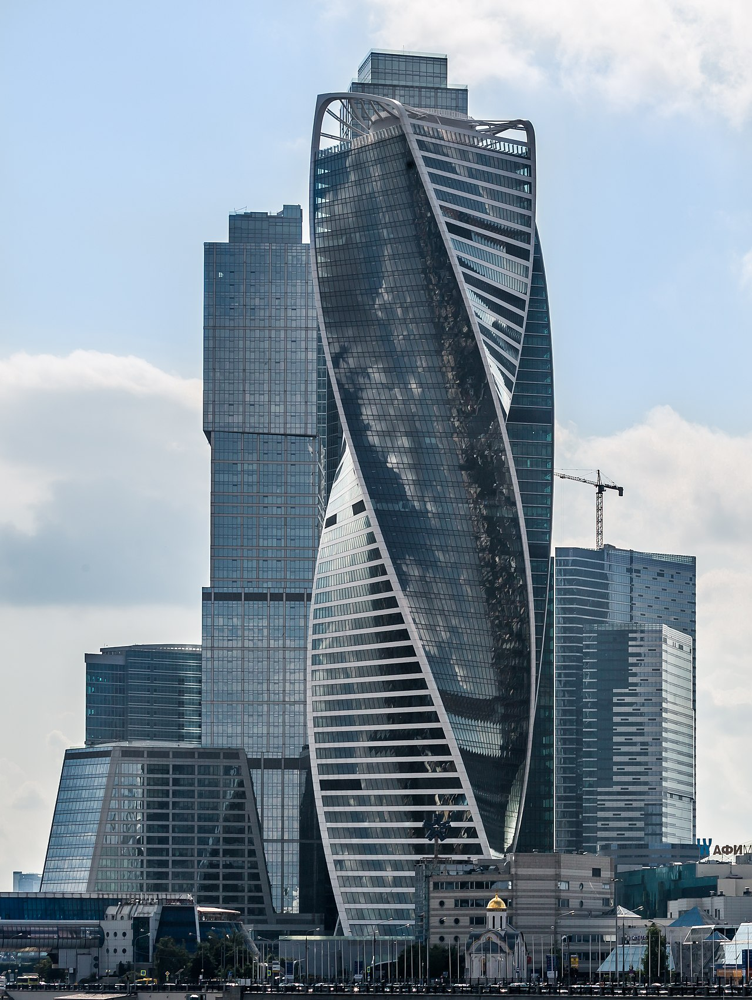
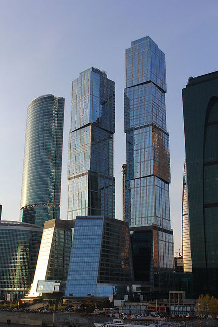
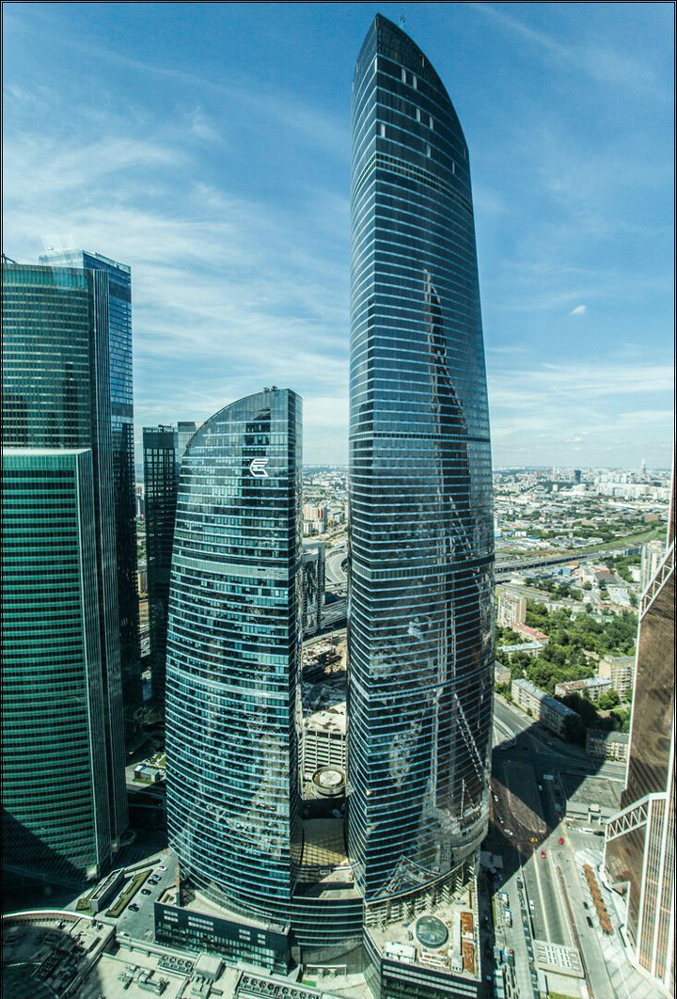

Москва-Сити -
развивающийся деловой район в Москве на Пресненской набережной. Является частью Пресненского района Центрального
административного округа Москвы.
В рамках «Москва-Сити» создаётся зона деловой активности, которая объединит бизнес, апартаменты проживания и досуг.
Управляющей компанией по созданию и развитию всего проекта ММДЦ «Москва-Сити» выступает ПАО «СИТИ», а техническим
заказчиком и представителем города Москва в распоряжении государственным имуществом Центрального ядра ММДЦ «Москва-Сити»
выступает ГУП «Центр-Сити».
Строительство ММДЦ «Москва-Сити» ведётся на Пресненской набережной, на месте бывшей каменоломни, на территории общей
площадью около 100 га, из которых 60 га подлежат новой застройке. На 2014 год объём инвестиций в ММДЦ составил примерно
12 млрд $. На 2016 год на территории ММДЦ «Москва-Сити» уже построено двенадцать из двадцати трёх запланированных
объектов. Ещё семь зданий находятся в стройке и четыре — в стадии проектирования. Строительство башен «Москва-Сити»
ведется за счёт средств частных инвесторов.
history
Первые планы создания в Москве бизнес-квартала международного образца появились в 1991 году. Инициатором был архитектор Борис Иванович Тхор, который обратился к Ю. М. Лужкову с предложением построить небоскрёбы международного делового центра. Тогда специально для строительства и эксплуатации ММДЦ «Москва-Сити» при активной поддержке Правительства Москвы было создано Акционерное общество «Сити», позднее преобразованное в ПАО «СИТИ», которое выступило в роли управляющей компании по созданию и развитию проекта ММДЦ «Москва-Сити». На основании соответствующих договоров, подписанных с Правительством Москвы, ПАО «СИТИ» выполняет функции заказчика по всему проекту и является арендатором земли под ММДЦ «Москва-Сити».
objects
Башня Эволюция
На участках № 2 и 3 размещается многофункциональный центр «Башня Эволюция» высотой 55 этажей. В состав многофункционального центра входят торговые помещения с ресторанами, а также офисные помещения. В стилобатной части центра предусматривается размещение торгово-развлекательных помещений, а также пешеходных связей между ТПМ «Багратион», станцией метро «Выставочная» и помещениями «Центрального ядра». В подземной части предусматривается размещение подземной автостоянки. В рамках благоустройства участков № 2 и 3 предусматривается строительство общегородской площади на эксплуатируемой кровле стилобатной части.
Комплекс "Город столиц"
Комплекс «Город столиц», символизирующий Москву и Санкт-Петербург, располагается на участке № 9. Архитектурный ансамбль, совмещающий в себе развлекательный комплекс, помещения офисов и элитные квартиры, под которые отводится больше половины верхних этажей. «Город столиц» состоит из двух башен — 76-этажная «Москва» и 65-этажный «Санкт-Петербург», высотой 302 м и 257 м соответственно, объединённых 17-этажным стилобатом и 17-этажного купольного здания с атриумом. Весь комплекс располагается на едином подиуме, состоящем из 6-уровневого подземного объёма и надземного 4-уровневого общественного пространства. В надземной части подиума располагаются магазины, фитнес-центр, презентационные залы, рестораны. В 17-этажной стилобатной части располагаются офисные помещения, над офисами в башнях — апартаменты.
Башня Федерация
Офисный комплекс «Федерация» располагается на участке № 13 ММДЦ «Москва-Сити». Строение представляет собой конструкцию из двух трёхгранных башен высотой 374 и 242 м соответственно, расположенных на стилобате. В башнях располагаются офисные помещения и апартаменты, разделяемые техническими этажами, а также ресторан. В стилобатной части планируется организация полного комплекса торговых и бытовых услуг. Подземная часть включает в себя технические помещения и пешеходную зону, соединяющую комплекс с центральной частью делового центра, северным выездом и комплексом на 12 участке. На ноябрь 2014 года стал самым высоким небоскрёбом в Европе и оставался таковым 3 года, до октября 2017 года, после чего его превзошёл ещё недостроенный петербургский «Лахта-центр». В 2018 году на 89 этаже открылась смотровая площадка.
emergency
- 2 апреля 2012 года в процессе строительства башни «Восток» произошёл крупный пожар на 67-м этаже, тушение которого заняло около четырёх часов. Всего в операции по ликвидации возгорания в здании приняли участие 25 пожарно-спасательных подразделений и 4 вертолёта Московского авиационного центра. Несмотря на привлечение вертолётов, потушить пожар долгое время не удавалось. Верхний этаж высотки полыхал практически по всей площади. Пламя то затухало, то разгоралось с новой силой. В результате инцидента никто не пострадал.
- 25 января 2013 года в процессе строительства многофункционального комплекса «ОКО» произошёл пожар на 24-м этаже.
- 12 января 2014 года в процессе строительства 17-этажного здания на Тестовской улице произошло возгорание. В результате задымления на 15-м этаже никто не пострадал.
- 9 июля 2014 года в процессе строительства башни «Эволюция» произошло возгорание кабеля, которое вскоре было ликвидировано. В результате происшествия никто не пострадал.
- 31 августа 2015 года в 18:45 начался пожар на 33 этаже в башне «Федерация-Восток». Причина пожара — возгорание строительных материалов. Открытая площадка-место планируемого перехода между башнями.